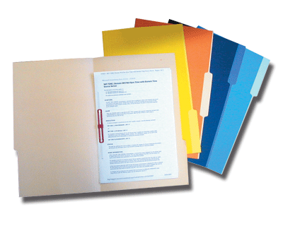

Inventario
Muchas veces se reciben aportes en bienes o servicios directamente, en vez de dinero en efectivo, esto es lo que se conoce como Donativos en Especies,
para lograr una verdadera transparencia en nuestro proceder, debemos
relacionar también estos aportes, y para eso utilizaremos este formato.
• • •
Ingresar en el Panel de Control y sleccionar el botón Especies según la actividad

Importante: Es necesario que tengamos instalado MS Excel en nuestra computadora, para que todos los archivos del Sistema funcionen adecuadamente.

Al abrir nuestro archivo especies.xls, este nos pedirá que confirmemos la ejecución de los Macros necesarios para que funciones el sistema.
Debemos pulsar donde dice Habilitar Macros.
Nota: Es
posible que no aparezca este mensaje, si la configuración de Excel está
ajustada para permitir todas las Macros, en este caso no hay ningún
problema.
Finalmente aparecerá una ventana advirtiendo que el archivo o libro,
está vinculado a otros archivos, lo cual es necesario para que funcione
el sistema.
En este caso debemos pulsar sobre el botón Actualizar, tal como lo muestra la imagen.

Datos Generales
Estos datos se cargan automáticamente de acuerdo a lo que haya intruducido en las demás hojas del sistema.

Ingreso de Donativos

FECHA: cuando se recibió el donativo.
DESCRIPCIÓN: una breve relación de lo que se recibió.
DONADO POR: persona natural o jurídica que hizo el aporte.
MONTO BSF: cálculo de lo que valdría el bién o servicio si tuiviese que se pagado
TIPO/SECTOR: Clasificación de la persona natural o jurídica que hace el aporte
- Sector Privado: Son
todas aquellas personas naturales o jurídicas que no forman parte del
Estado. Ejemplo: Sr. Pedro Pérez, CACOINPAR, Supermercado Lau.
- Sector Público: Son
todos los entes que forman parte o pertenecen al Estado. Ejemplo:
Gobernación de Estado; Alcaldías y Consejos Municipales; Institutos
Nacionales, Estadales o Municipales, PDVSA..

Reporte
Una vez cerrada la administración del evento, esta hoja impresa, pasa a formar parte del reporte del mismo.
Ayudas
Para
acceder a este Instructivo, pulse sobre el
botón ? que está en la parte superior derecha.